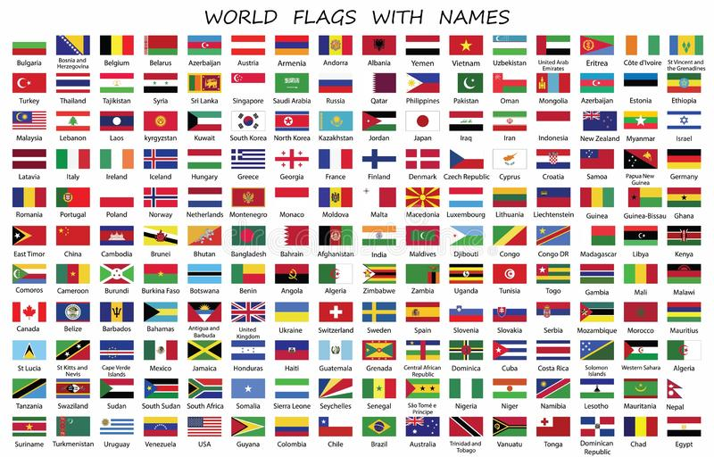

A identificação de um lugar se dá por várias formas: hino, língua, comida típicas e, claro, as bandeiras. O que é representado neste símbolo normalmente tem a ver com a história, belezas ou recursos naturais do local. Não existe um padrão estabelecido, porém alguns elementos são bem comuns, como o vermelho que está presente em 31,5% das bandeiras nacionais.
Porque as bandeiras são retangulares..?
A identificação de um lugar se dá por várias formas: hino, língua, comida típicas e, claro, as bandeiras. O que é representado neste símbolo normalmente tem a ver com a história, belezas ou recursos naturais do local. Não existe um padrão estabelecido, porém alguns elementos são bem comuns, como o vermelho que está presente em 31,5% das bandeiras nacionais.

Continentes
Os continentes são as divisões do espaço terrestre elaboradas pelo homem para melhor compreendê-lo. Trata-se de grandes massas de terras que são separadas pelos oceanos. Assim, de acordo com a divisão atual, existem seis principais continentes: América, Europa, África, Ásia, Oceania e a Antártida.
A definição do termo continente não é um consenso entre os geógrafos. Pelo menos três versões podem ser consideradas. A primeira e mais utilizada considera que no planeta há seis continentes – extensas massas de terra cercadas por oceanos e que abrigam diversos países. A segunda considera a existência de apenas cinco continentes – ora considerando a Antártida um não continente, ora considerando a Europa e Ásia como um único continente, a Eurásia, por se situarem em uma mesma placa tectônica. A terceira amplia para oito o número de continentes, por considerar as subdivisões do continente americano (Norte, Central e Sul) como continentes autônomos. Neste texto, utilizaremos a definição mais aceita e usual de seis continentes.
neste site site não estrará presente as bandeiras de nações em desconformidade com a onu